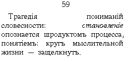
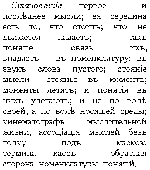
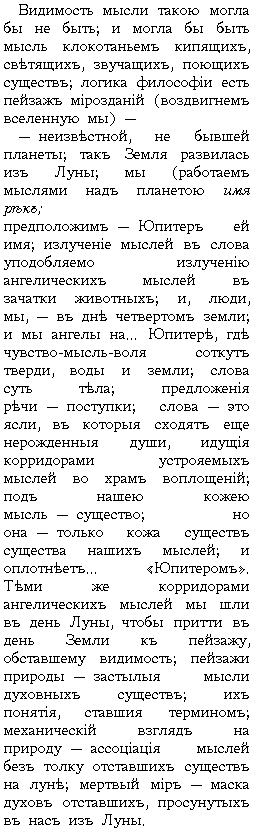

Glossolalia (Section 59)
GLOSSOLALIA

The tragedy of comprehending the written word is that: becoming is recognized as the product of a process, as a concept: the circle of the life of thought is -- latched shut.

Becoming is -- the first and final aspect of thought; its middle is that which stands still; that which does not move -- falls; thus the concept, the connection between them, falls -- into nomenclature; into the sound of an empty word; this standing still of thought is -- standing in the moment; moments fly by; and the concepts fly away in them; and not by their own free will, but by the will of the milieux carrying them; the cinematographer of the life of thought, the association of thoughts without any sense of that under the mask of the term is -- chaos: the reverse side of the nomenclature of concepts.

The visibility of thought could have been otherwise; and thought could have been a babbling of boiling, illuminating, resounding, singing beings; the logic of philosophy is a paysage of the world (we shall erect the universe) --
-- of the unknown, non-existent planet; thus Earth developed from the Moon; we labor with our thoughts over the planet no-name; let us suppose -- Jupiter is its name; the illumination of thoughts in words can be likened to the illumination of angelic thoughts in the embryos of the animals; and we, the people, are -- in day four of the Earth; and we are angels on . . . Jupiter, where the senses-thought-will will weave the firmaments, the waters, and the earths; words here are bodies; utterances of speech are -- acts; words -- these are the cradles, into which will come the still unborn souls, walking along the corridors of constructed thoughts into the cathedral of incarnations; beneath our skin thought is -- a being; but thought is -- only the skin of beings of the being of our thoughts; and it condenses as..."Jupiter." Along these same corridors of angelic thoughts we walked on the day of the Moon, so as to arrive on the day of Earth to the paysage, which encompasses the visible world; the paysages of nature are -- congealed thoughts of spiritual beings; their concepts, which have become a term; a mechanistic glance at nature is -- an association of thoughts without any sense of the beings who remained behind on the luna; a dead world -- a mask of spirits remained behind, thrust upon us from the Moon.